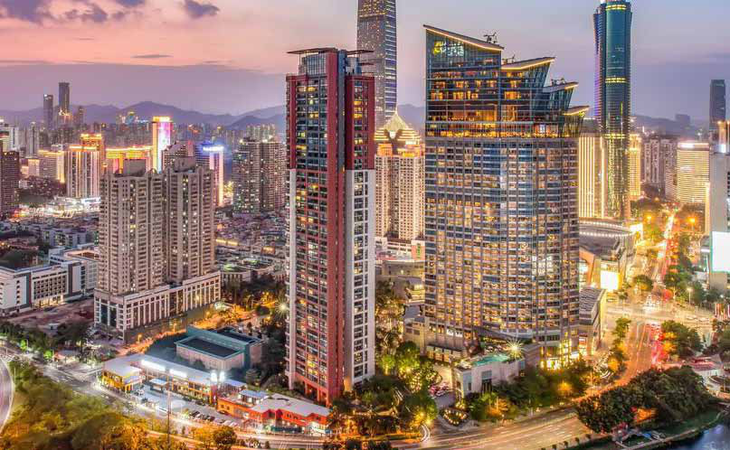
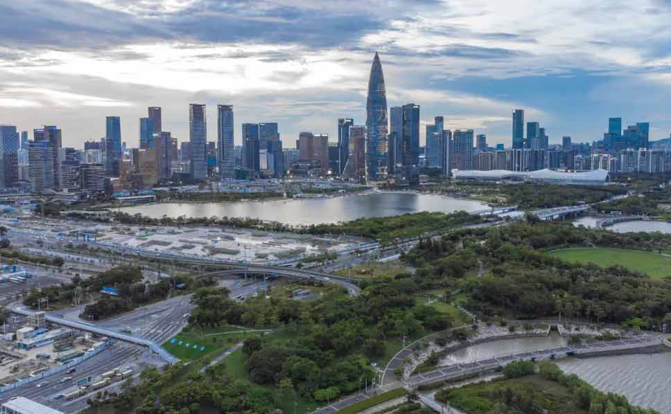
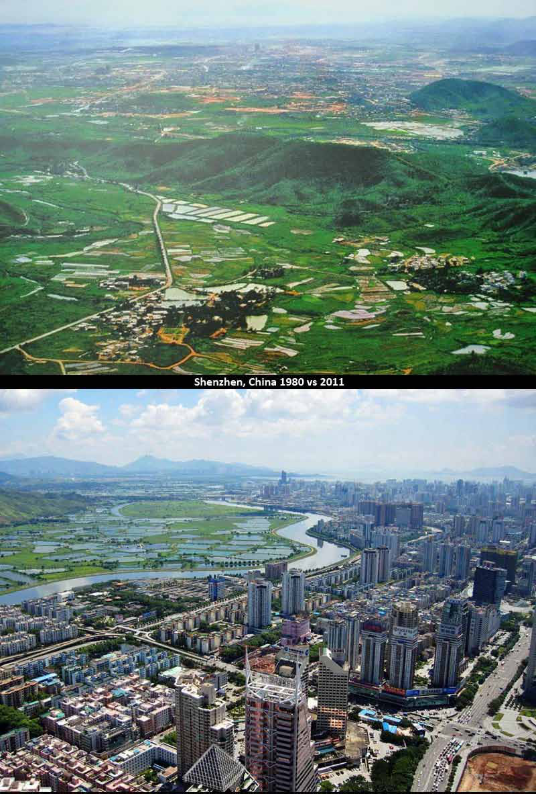
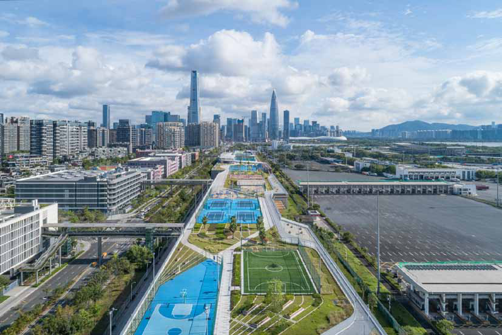
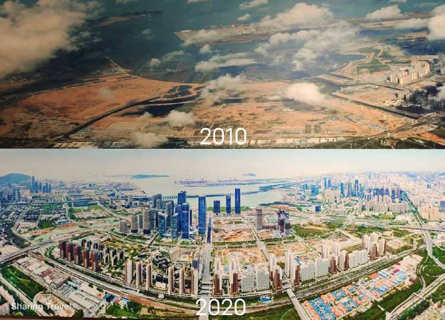
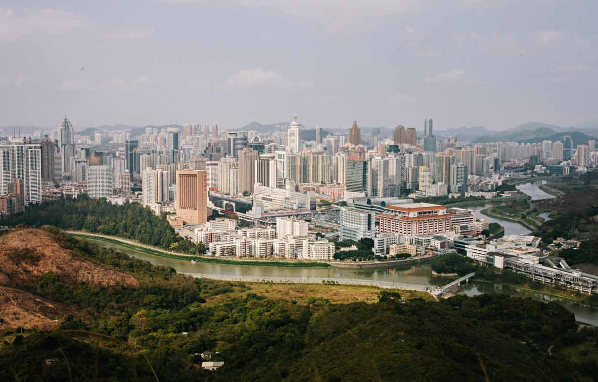
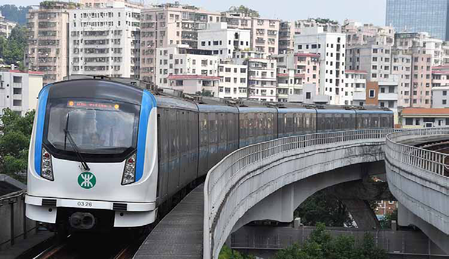
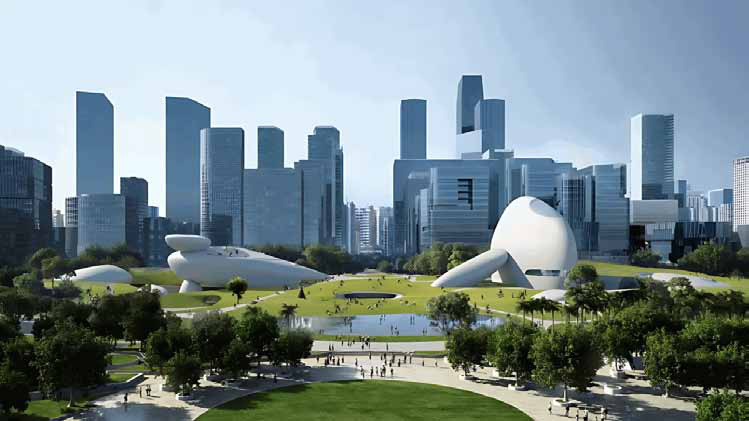

Monitor Memo
Monitor Memo
Jaffna Monitor hellojaffnamonitor@gmail.com 31 N orthern Province Governor N. Vethanayagan emphasized the need to protect farmers from exploitation by middlemen and to ensure fair market prices for their produce. He also announced plans to reopen economic centers in the province this year to address these critical issues. The Governor made these remarks during the paddy harvesting festival and farmer recognition ceremony organized by the Maravanpulavu Farmers' Association. The event was held at the Maravanpulavu Sakalakalavalli School on Monday morning. In his keynote address, Governor Vethanayagan highlighted the impact of climate change on agriculture: "Climate change has become a significant challenge for farmers. In the past, paddy harvesting seasons were not disrupted by rain. However, we now face erratic weather patterns that affect farming operations. Last November, despite heavy rains over a few days, we were fortunate to avoid substantial paddy losses. These rains, combined with the current weather, have left fields waterlogged, which farmers can use to their advantage." The Governor encouraged farmers to diversify by cultivating minor millets after completing their paddy harvests. He assured them that the Department of Agriculture, through the Chief Secretary, has initiated measures to provide seeds for these crops. "While other districts in the Northern Province rely on irrigation for dual cropping seasons, Jaffna depends entirely on rainfall and is limited to one cropping season. By adapting to the current climatic changes, farmers can cultivate minor millets and increase their income." He also called for a forward-thinking approach to agriculture, emphasizing the importance of aligning crop production with the region's soil suitability and export potential. The Governor assured farmers that the Department of Agriculture would support the implementation of these strategies. Monitor Memo Farmers Must Be Protected from Middlemen: Northern Province Governor
Jaffna Monitor hellojaffnamonitor@gmail.com 32 Article From Fishing Village to Global Hub: How Shenzhen Conquered Urban Growth and Pollution Jaffna Monitor in Shenzhen I found myself standing amidst a forest of gleaming skyscrapers, their glass facades shimmering in the sunlight and bustling tech hubs that seemed to defy gravity. This was Shenzhen—the "Silicon Valley of China." It was hard to believe that just a few decades ago, this sprawling, futuristic metropolis had been nothing more than a sleepy fishing village with a population of merely 28,000. It felt like a story lifted straight from the pages of a science fiction novel. Locals told me that back in the early 1980s, Shenzhen was a modest settlement, with life revolving around rickety fishing boats bobbing along the shoreline and a handful of simple homes scattered across the landscape. The population at the time was

Jaffna Monitor hellojaffnamonitor@gmail.com 33 just a few lakhs. Today, with over 20 million residents, Shenzhen boasts thousands of towering skyscrapers, architectural marvels, and awe-inspiring infrastructure. In just a few decades, it has transformed from a small fishing village into a leading global powerhouse. This astonishing growth is reflected in Shenzhen's meteoric economic rise. The City's GDP has soared to approximately $500 billion. To put this into perspective, Sri Lanka's projected GDP for 2024 is around $80 billion, making Shenzhen's GDP—just that of a single city—over six times larger than Sri Lanka's entire economy. Even more impressive is Shenzhen's ability to achieve this rapid development while tackling environmental challenges. Despite the vast scale of its infrastructure and industries, Shenzhen has emerged as one of the cleanest cities in both China and the world. How clean, you ask? Consider this: as of December 2024, Colombo's Air Quality Index (AQI) fluctuates between 96 and 106, categorized as 'Moderate,' with some areas facing even higher pollution levels. Meanwhile, Shenzhen, with infrastructure and industrial activity far surpassing Colombo's, has maintained an AQI ranging from 24 to 64, indicating consistent 'Good' to 'Moderate' air quality. Environmental experts, speaking to Jaffna Monitor, have highlighted Shenzhen as a shining example of a top-tier international city that consistently meets national air quality standards. The Birth of a Global Icon: Shenzhen's Extraordinary Journey A local told Jaffna Monitor that Shenzhen's transformation began in 1980 when it was designated as China's first-ever Special Economic Zone (SEZ). This bold initiative was a cornerstone of Deng Xiaoping's sweeping reforms. Widely regarded as the architect of modern China, Deng opened the nation's economy to the world after decades of isolation under strict communist policies.

Jaffna Monitor hellojaffnamonitor@gmail.com 34 Few, including locals who spoke to Jaffna Monitor, could have imagined the seismic changes ahead. "We never imagined our town would become a global economic powerhouse," one resident remarked. Yet, the decision to transform this unassuming village into a testing ground for free-market reforms set in motion a dramatic evolution. Experts told Jaffna Monitor that China's economic condition before the reforms was dire, plagued by inefficiencies in its centrally planned system. In 1981, more than 88% of the population lived below the international poverty line. Industries were state-owned and technologically outdated, trade was minimal, and foreign investment was virtually nonexistent. However, the tide began to turn with the reforms initiated under Deng Xiaoping. The announcement in May 1980 to establish the Special Economic Zone (SEZ) marked a significant departure from China's past policies. Experts noted that Shenzhen was strategically chosen due to its proximity to Hong Kong, a thriving capitalist economy at the time, and envisioned as mainland China's answer to Hong Kong. The SEZ implemented groundbreaking measures, including tax incentives, relaxed labor laws, and reduced regulatory barriers, fostering an environment designed for economic experimentation. An economic stalwart, speaking with Jaffna Monitor, remarked, "As China's first Special Economic Zone (SEZ), Shenzhen was envisioned as a testing ground where market capitalism could thrive under the framework of 'socialism with Chinese characteristics.'" The results were nothing short of transformative. Billions of dollars flowed into the City; Skyscrapers rose swiftly, like bamboo shoots after rain. Shenzhen rapidly gained a reputation as China's gateway to the world. By the 1990s, its economy was thriving and rivaling the vibrancy and dynamism of the most developed cities globally. Yet, this meteoric rise came at a steep cost. As factories churned out goods at an unprecedented pace, the City's environment bore the brunt of industrialization. By the end of the 20th century, Shenzhen stood at a critical crossroads. Its success had come at the expense of its air, water, and land. Birth of Shenzhen's Green Revolution Then came what experts call Shenzhen's Green Revolution—Guided by expert advice, the city government adopted a series of ambitious, science-backed, and innovative strategies aimed at tackling pollution while maintaining its remarkable economic growth. So, how did Shenzhen pull off this transformation? Revolutionizing Transportation One of the most transformative measures undertaken by Shenzhen's authorities was revolutionizing its transportation system. In a pioneering effort, Shenzhen electrified its entire public bus fleet. Building on this success, the City went a step further by electrifying over 99% of its taxi fleet. To encourage the adoption of electric vehicles (EVs), generous subsidies were offered to buyers. As a result, EVs have become widely used in both private and public transportation. Shenzhen's infrastructure has transformed to meet the demands of EVs. The city has developed over 80,000 charging stations to
Jaffna Monitor hellojaffnamonitor@gmail.com 35

Jaffna Monitor hellojaffnamonitor@gmail.com 36 ensure convenient charging, while numerous companies are actively working to enhance charging speeds further. The city has successfully fostered a collective mindset that not only embraces electric vehicles (EVs) but also seamlessly integrates them into everyday life. Remarkably, Shenzhen's residents have enthusiastically adopted EVs, showing little to no resistance to the transition. The City of a Thousand Parks The authorities didn't stop at revolutionizing Shenzhen's transportation system—they rejuvenated old parks and created new ones, transforming the City into a green paradise. Today, Shenzhen is aptly called "The City of a Thousand Parks," with over 1,200 parks, ranging from revitalized natural reserves like Wutong Mountain National Forest Park to newly developed, charming community spaces. Unlike many other rapidly industrializing cities, Shenzhen integrated vast green areas into its urban design. Adding to its progressive urban philosophy, Shenzhen is one of the few cities in the world where pets are allowed on public transportation. It's not uncommon to see pet owners riding the metro, boarding buses, or walking through shopping malls with their dogs. Dasha River Ecological Corridor Undoubtedly, One of Shenzhen's most remarkable environmental achievements is the regeneration of the Dasha River Ecological Corridor, a landmark project in the City's Nanshan District. Once a neglected and polluted waterway, the corridor now spans approximately 13.7 kilometers (about 8.5 miles) from the Changlingpi Reservoir to the estuary of Shenzhen Bay, covering an area of nearly 950,000 square meters. The revitalized corridor is adorned with vibrant plants and blooming flowers along its banks. Speaking to Jaffna Monitor, an expert emphasized the innovation behind the project: "The greenery along the Dasha River is carefully chosen to be non-invasive to native

Jaffna Monitor hellojaffnamonitor@gmail.com 37 species and is specifically designed to filter pollutants from rainwater and city wastewater. This approach not only purifies the water but also creates a thriving habitat for wildlife." Industrial Transformation: From Smoke to Silicon Shenzhen's rise to global prominence began with its manufacturing sector. However, as factories churned out products at an unprecedented pace, they also released pollutants into the air, water, and soil. Recognizing the unsustainability of this path, experts say Shenzhen embarked on an ambitious transformation to rewrite its industrial narrative—what they describe as evolving from a "city of smoke" to a "city of silicon." The Shift to High-Tech Industries Understanding that pollution and long-term prosperity could not coexist, the government laid the groundwork for a revolutionary shift toward cleaner, smarter industries. Polluting factories were systematically relocated or shut down, making way for innovation-driven enterprises. The City became a magnet for high-tech industries, attracting pioneers in electronics, biotechnology, and renewable energy. Iconic companies like Huawei, Tencent, and BYD found fertile ground in Shenzhen. Restoring Rivers and Revitalizing Ecosystems Water pollution was once one of Shenzhen's

Jaffna Monitor hellojaffnamonitor@gmail.com 38 gravest challenges, threatening the City's environment and public health as it expanded rapidly. However, Since 2016, the City has implemented a series of ambitious measures to combat water pollution, including the construction of nearly 4,000 miles of advanced sewage networks using cutting-edge rainwater diversion technology. This innovative approach separates rainwater from sewage, preventing untreated wastewater from overflowing into rivers and other water bodies during heavy rains. By channeling rainwater and sewage through distinct systems, Shenzhen has significantly reduced contamination in its waterways. This massive infrastructure investment has transformed previously polluted rivers and lakes into clean, flowing waters that now sustain thriving ecosystems. Restoring Wild Waterways In 2019, Shenzhen achieved a historic milestone by becoming the first City in China to fully restore its wild waterways. Once clogged with waste and severely polluted, rivers such as the Maozhou River have been revitalized. The Maozhou River, previously considered one of the most polluted rivers in Guangdong Province, now boasts clear waters and flourishing biodiversity. Shenzhen's water restoration efforts go hand in hand with its broader commitment to sustainability. The City has invested in smart water management systems, including real- time monitoring technologies, to promptly detect and address pollution sources. Furthermore, Shenzhen has created multiple wetland parks and constructed wetlands, which act as natural filters to purify water and provide habitats for wildlife. The results of these efforts have been transformative. Over 98% of Shenzhen's waterways have now met the required water quality standards, a feat celebrated as a model for other cities in China and around the world. A New Era of Green Architecture Shenzhen's green building revolution is underpinned by rigorous regulations that mandate energy-efficient designs, the use of sustainable materials, and the integration of renewable energy. Buildings in Shenzhen employ advanced materials designed to minimize heat absorption while enhancing insulation, significantly reducing the need for energy-intensive cooling systems in the City's subtropical climate. Strategic architectural elements like optimized window placements, light wells, and reflective glass maximize natural light and reduce dependency on artificial lighting, cutting electricity use by up to 30% in many cases. Proper ventilation systems ensure high indoor air quality while conserving energy. These systems often feature smart sensors that intelligently regulate air circulation and temperature. Pioneering the Vertical Green City Revolution Shenzhen exemplifies a modern city where towering skyscrapers are not merely feats of engineering but living, breathing ecosystems. A green vertical town incorporates greenery such as plants, trees, and gardens directly into the design of tall buildings, creating eco- friendly urban spaces that reduce pollution, enhance air quality, and improve the well- being of residents. This concept is no longer a futuristic vision in Shenzhen—it is a thriving reality. Shenzhen has emerged as a global
Jaffna Monitor hellojaffnamonitor@gmail.com 39 beacon of eco-friendly and green vertical urban development by seamlessly integrating sustainable architecture with vertical greenery. Sponge City Program: Transforming Flood Challenges into Opportunities Shenzhen's innovative Sponge City Program is redefining urban resilience by transforming the challenge of urban flooding—a common scenario in many cities—into an opportunity for sustainable development. The program is designed to absorb, store, and purify rainwater using a combination of green infrastructure and smart water management systems. Permeable pavements, rain gardens, bioswales, and wetlands are strategically integrated into the cityscape to naturally filter and reuse rainwater, significantly reducing surface runoff during heavy rains, experts explained to Jaffna Monitor. The impact of the Sponge City Program has been transformative. Flood risks have decreased, water quality has improved, and the urban heat island effect has been mitigated. By capturing up to 70% of stormwater, Shenzhen ensures cleaner water for irrigation, landscaping, and various non-potable urban uses. Moreover, experts note that by enhancing groundwater recharge, the program is contributing to long-term water security. Solar Power at the Forefront Solar energy is another cornerstone of Shenzhen's architectural innovation. Many of the City's high-rise buildings are outfitted with photovoltaic panels, harnessing the region's abundant sunlight to generate clean, renewable energy. Some buildings even feature integrated solar façades, turning entire surfaces into energy-generating systems. This widespread use of solar technology has significantly reduced Shenzhen's reliance on fossil fuels, contributing to a notable decrease in carbon emissions. Urban Reforestation and Coastal Restoration Over the years, the City has planted millions of trees, converting wastelands into lush parks and nature reserves. These efforts have helped absorb carbon emissions, reduce urban flooding, and improve air quality. One of the City's standout projects is the restoration of its mangrove forests along the coastline. These ecosystems act as natural flood barriers, protect biodiversity, and sequester carbon.

Jaffna Monitor hellojaffnamonitor@gmail.com 40 Tackling Waste Management Shenzhen's population explosion created mountains of waste. To address this, the City invested in advanced waste-to-energy (WTE) plants capable of generating clean energy from municipal solid waste. These facilities have drastically reduced the amount of waste sent to landfills while supplying electricity to thousands of homes. The City also implemented a comprehensive recycling program, with strict laws requiring businesses and residents to sort their waste. Public education campaigns have played a vital role in changing attitudes toward waste management. Metro System A study on Shenzhen's metro system reveals that expanded and well-connected metro networks significantly reduce pollution by diverting on-road traffic to rail, cutting vehicle emissions. Stations integrated with transit- oriented development further amplified these effects, showcasing how comprehensive rail systems can effectively mitigate urban air pollution. Technology as a Catalyst Shenzhen's success owes much to its embrace of technology. Smart city initiatives use big data, AI, and IoT (Internet of Things) to monitor air quality, manage traffic, and optimize energy use. For example, real-time air quality sensors provide data to policymakers and residents, enabling immediate action during pollution spikes. In addition, Shenzhen's tech sector has driven innovation in renewable energy and sustainable urban solutions. High-Tech Fight for Clean Air Shenzhen has leveraged advanced technology to enhance its air quality management systems. The City operates a comprehensive network of monitoring stations that collect

Jaffna Monitor hellojaffnamonitor@gmail.com 41 real-time data on pollutants such as PM2.5, sulfur dioxide, and nitrogen oxides. This data is integrated into a centralized platform that utilizes AI algorithms to analyze trends, predict pollution spikes, and identify hotspots. Additionally, Shenzhen employs drones equipped with sensors to inspect areas that are difficult to access, such as industrial zones and construction sites, further strengthening its enforcement capabilities. In 2018, Shenzhen launched a real-time air monitoring system as part of its campaign to improve air quality. Automatic monitoring takes data from 74 PM2.5 monitoring sites, all connected to a unified platform. Data-Assisted Enforcement: A Simple Yet Powerful Tool Shenzhen has also harnessed the power of data to revolutionize air quality management. Using advanced monitoring technologies, the City collects two critical types of data hourly: emission levels from factories and a comprehensive air quality index. This data is not only meticulously gathered but also made publicly available, empowering citizens and environmental advocates to monitor trends and hold authorities accountable. "If a company is caught discharging pollutants these days, it becomes the subject of hourly inspections," an expert explained. This heightened level of scrutiny serves as a strong deterrent to potential violators while enabling authorities to respond swiftly to any incidents, he added. Accountability at Every Level Unlike in the past, when city and township officials were responsible for collecting environmental data—often leaving room for manipulation—data collection in Shenzhen is now centralized, automated, and technology- driven, ensuring accuracy and transparency. Experts note that this shift has effectively closed the loopholes that once allowed local authorities to "massage the results." In addition, city officials are now held to strict performance standards set by higher authorities. Failure to meet air quality targets can result in demotions, fines, or other disciplinary actions. Experts explain that

Jaffna Monitor hellojaffnamonitor@gmail.com 42 this top-down accountability has created a powerful incentive for cities like Shenzhen to rigorously enforce environmental regulations. Rigorous Enforcement: The Cornerstone of Shenzhen's Clean Air Success Experts told Jaffna Monitor that while many industrial cities worldwide have struggled to achieve a clean environment, Shenzhen's remarkable improvement in air quality can be attributed to its stringent enforcement of environmental regulations. The City deploys dedicated inspection teams to conduct unannounced factory visits, ensuring strict compliance with pollution control measures. Non-compliant factories face severe penalties, including substantial fines, temporary suspension of operations, and, in extreme cases, permanent closure. Shenzhen authorities told Jaffna Monitor, "We punish everyone who violates our environmental regulations, no matter their size or influence. There is no gray area when it comes to punishing environmental violators. Our approach is clear and uncompromising." Public Engagement: Naming, Shaming, and Empowering In addition to regulatory enforcement, Shenzhen has embraced public engagement as a powerful tool for environmental reform. A local resident told Jaffna Monitor, "Polluting companies are publicly named and shamed, with their violations highlighted in media reports and online platforms." This transparency, he explained, not only pressures businesses to clean up their operations but also empowers residents to hold companies accountable. Citizens play an active role in this community- driven approach to pollution control. They can report violations through dedicated hotlines and mobile apps, creating a network of vigilant individuals committed to safeguarding the environment. This initiative has fostered a sense of responsibility among patriotic citizens who take pride in ensuring their City remains clean, orderly, and sustainable. Navigating Future Hurdles Environmental experts have also cautioned that while Shenzhen's initiatives have set benchmarks globally, sustaining these achievements in the long term will require constant vigilance and adaptation to emerging challenges. For instance, maintaining water quality and combating air pollution could become more complex as industrial and population density increases. The City's reliance on advanced technologies to monitor and address environmental issues, while effective, could face risks related to system scalability and data security. A Model for the World Shenzhen is a classic example of how massive economic growth and the construction of towering skyscrapers can coexist harmoniously with environmental sustainability, given strong commitment and visionary leadership. By minimizing corruption, integrating advanced technologies, enforcing effective governance, and fostering active public engagement, any city can transform environmental challenges into opportunities. This offers an inspiring model for a country like Sri Lanka, whose people have recently set aside their divisions and appear to have embraced a shared vision of development.